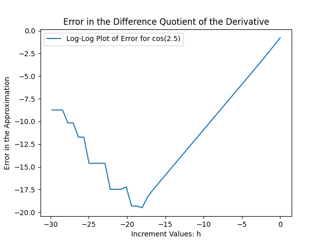
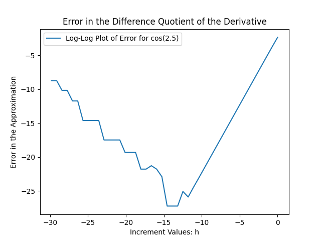

Math 4610 Fundamentals of Computational Mathematics - Topic 09.
In this section we will see an example of an approximation of a derivative that
produces errors in the value of the derivative no matter what we do with the
limit approximation. The difference between the exact and approximate value will
reduce at first and then will start to grow. This is an easy result to replicate
and identifies the problem of finite resource limitations on any computer. The
problem arises when the numbers being used are so small, the computer will
treat them as a zero or garbage even though analytically the values are nonzero.
Approximation of the First Derivative - the Difference Quotient
One of the most useful tools in mathematics is the derivative. In a calculus
course, we say that the derivative of a function, \(f\), at a point \(a\) in the
domain of the function exists if
\[
f'(a) = \lim_{x\rightarrow a} {{f(a+h)-f(a)}\over{(a+h)-a}}
= \lim_{x\rightarrow a} {{f(a+h)-f(a)}\over{h}}
\]
exists. In this case, the function, \ is said to be differential at the point
\(a\). The definition usually is specified on some open interval that contains
the point, \(a\). From a theoretical point of view, showing the limit exists
requires the values of the function at points arbitrarily close to the point
\(a\) and requires checking all the infinitely many points in that neighborhood.
In a calculus course, rules are established to allow us to compute a formula
for the derivative at the point.
For example, suppose \(f(x)=cos(x)\). Then we know through the skill set
obtained in a first semester calculus course that
\[
f'(x) = -sin(x)
\]
The formula is developed using a series of simple theorems that are actually
pretty easy to prove. If we have a formula for the derivative, all we really
need to do is to evaluate the derivative after computing the symbolic form of
the derivative. Note that platforms like Mathematica, Maple, and others make it
simple to compute a lot of derivatives of elementary functions. Mathematica is
every first semester calculus student's dream come true. Most scientific
calculators can compute the same sorts of derivatives.
From a computational point of view, taking the limit of a function is not truly
feasible due to the issue of an infinite number of points to be checked to the
left and right of the point \(a\) in the definition above. It is the calculus
formulas that save us on simple elementary functions. But what happens if the
function is defined by data points and we do not know a formula that defines the
relationship between the inputs and outputs in the data set. Also, it is not
unusual that the data sets can be enormous involving petabytes of data. It may
even be necessary to process/flatten the data before trying to define a
functional relationship if that is even possible.
There are other problems that we cannot avoid which is what we will be
investigating in this section. Computationally, we cannot use the limit
definition of the derivative to compute approximations. So, we can approximate
the derivative using the difference quotient in the definition. That is,
\[
f'(a) \approx {{f(a+h)-f(a)}\over{(a+h)-a}} = {{f(a+h)-f(a)}\over{h}}
\]
Given a function, say \(f(x)=cos(x)\) as above, we could write an approximation
for the derivative at a point, say \(a=2.0\). The approximation will look like
\[
-sin(2.0) \approx {{cos(2.0+h)-cos(2.0)}\over{h}}
\]
From our calculus training, as we take \(h\) closer to zero, the values obtained
from the difference quotient will approach the derivative value, \(-sin(2.0)\).
Unfortunately, things are not as we assumed in calculus. The main problem we
will run into is the finite representation of numbers. After we complete this
example, we will talk about absolute and relative error. These errors become
very important due to the finite precision of number representation on your
favorite computer.
The Example
Let's compute the value of the difference quotient at values of \(h=0.1\),
\(h=0.01\), \(h=0.001\), and so on and see if the difference quotient actually
converges to the value we expect. The following table lists the values of the
difference quotient with the exact value and the difference between the
approximation and the exact value as \(h\) varies. Note that
\[
-sin(2.0) = -0.034899497...
\]
The values discussed above are shown in the following table with \(h\)
decreasing as the iteration counter increases.
A simple program was written in Python to generate the values in the table shown
above. The code is shown below.
from matplotlib import pyplot as plt
import numpy as np
#
# initialize the exact value of the derivative
# --------------------------------------------
#
aval = 2.5
exactVal = -np.sin(aval)
#
# set up the arrays for plotting the log-log plot we need
# -------------------------------------------------------
#
x = []
y = []
#
# initialize the array for the increment size and error in the finite
# difference approximation
# ------------------------
#
h = []
error = []
#
# append the initial increment with a starting value - in this case, 1.0
# ----------------------------------------------------------------------
#
h.append(1.0)
#
# compute the difference quotient for the increment value
# -------------------------------------------------------
#
dfVal = ( np.cos(aval + h[0]) - np.cos(aval) ) / h[0]
error.append(np.abs(exactVal - dfVal))
#
# append the log-log point for plotting at the end
# ------------------------------------------------
#
x.append(np.log(h[0]))
y.append(np.log(error[0]))
#
# print the exact value for sanity
# --------------------------------
#
print('The exact derivative value is: ', exactVal)
#
# set a loop counter
# ------------------
#
l=1
#
# the loop over ndiv increments
# -----------------------------
#
ndiv = 44
while l<44:
#
# append the next increment of h
# ------------------------------
#
h.append(0.5 * h[l-1])
#
# compute the numerator and denominator for the difference approximation
# and compute the approximation from these
# ----------------------------------------
#
numval = np.cos(aval+h[l])-np.cos(aval)
denom = h[l]
dfVal = numval / denom
#
# compute the error in the approximation
# --------------------------------------
#
error.append(np.abs( dfVal - exactVal ))
#
# append the log-log point to the arrays for plotting below
# ---------------------------------------------------------
#
x.append(np.log(h[l]))
y.append(np.log(error[l]))
#
# update the loop iterator
# ------------------------
#
l += 1
#
# set up a plot for the data generated
# ------------------------------------
#
plt.title('Error in the Difference Quotient of the Derivative')
plt.xlabel('Increment Values: h')
plt.ylabel('Error in the Approximation')
plt.plot(x, y, label='Log-Log Plot of Error for cos(2.5)')
plt.legend()
plt.show()
You are welcome to download and try the
code out within the confines of a Python program that runs scripts.
Depicting the Results Graphically
The results in the table are graphed on a log-log plot to see how the error
varies as \(h\) is reduced. In looking at this type of graph you should move
your eyes right to left since as \(h\) decreases we expect the error to go to
zero. The error reduces for awhile, but then starts to grow due to finite
precision issues with numbers and arithmetic operations. Another point to make
about the graph is that the error is not changing smoothly as it increases.
This, as we will find is due to the fact that the numbers being used are random
garbage. We will look into these problems over the next few topics in the
course.

The figure shows how the error is reduced as \(h\) approaches zero until
the value is too small. The plot is a log-log graph of the data generated
by the python script described in this section.}
Alternative Approximations
If we want a more accurate approximation of the derivative, we will need to find
another way to approximate \(f'\). One way is to use alternate definitions of
the derivative. The following two limit definitions for the first derivative of
a function are equivalent to the original.
\[
f'(a) = \lim_{h\rightarrow 0} {{f(a)-f(a-h)}\over{h}}
\ \ \ \ \rightarrow \ \ \ \ f'(a) \approx {{f(a)-f(a-h)}\over{h}}
\]
and
\[
f'(a) = \lim_{h\rightarrow 0} {{f(a+h)-f(a-h)}\over{2h}}
\ \ \ \ \rightarrow \ \ \ \ f'(a) \approx {{f(a+h)-f(a-h)}\over{2h}}
\]
are both reasonable approximations of the derivative. The original approximation
in this section and the first of the two alternate definitions are called
one-sided derivative approximation. The third of these approximations is called
a centered difference approximation.
The results from the centered difference approximation are shown in the figure
below. You should investigate the scale in both figures in this topic. What is
the difference in the two graphs?
There are infinitely many ways to come up with approximations for the first
derivative. So, a couple of questions can be asked.
Which of these approximations is the "best" approximation method?
Is the method we choose accurate enough for the purpose needed?
These questions will be answered in future topics in the course. In particular,
we will use Taylor series expansions to determine mathematically how accurate
the approximation is. The other part of the questions involves determining the
limitations of the approximations using computer arithmetic. This will be a part
of the next topic we cover on machine precision numbers and arithmetic.

This figure shows the same results for the centered difference
approximation to the first derivative. The plot is a log-log graph of the
data generated by a python script similar to the one included above.
Previous
|
Table of Contents
|
Next